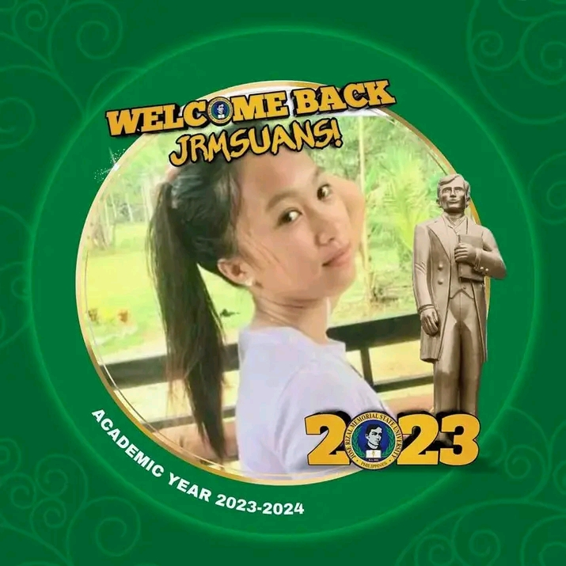

MY AUTOBIOGRAPHY
I am Jocelyn M. Cabalbag I was born on November 15, 2004 at Purok 1 Batayan Kalawit Zamboanga Del Norte, Philippines.
Currently taking up the program Bachelor of Science in Computer Science at Jose Rizal Memorial State University Tampilisan
campus. Im dedicated to reached my goals thats why Im striving hard for the better future of mine. We are five siblings
in the family. I am the fourth child. My mothers name is Enerita Cabalbag she is from Sindangan and my fathers name is Federico
Cabalbag, he is from Kitabog Titay Zamboanga Sibugay. I took my elementary education as well as my secondary education at Batayan
Kalawit Zamboanga Del Norte. In my highschool life I started being insecure about my look I dont have enough confidence to socialize
with others. I like being alone reading stories in any genre, watching K- dramas and playing online games. When my college life begins
all will change and started making my life miserable the preassure in every aspect of my life I came to the point that sometimes I feel
that I was giving up, but with the help of GOD he will never abandon me he save me from the struggles that I face. I belong to a family
that isnt rich but they can provide all my need and wants in life. Thats why I study hard to repay all their sacrifices so that it will not
be wasted. Because education prepares us for the better future.